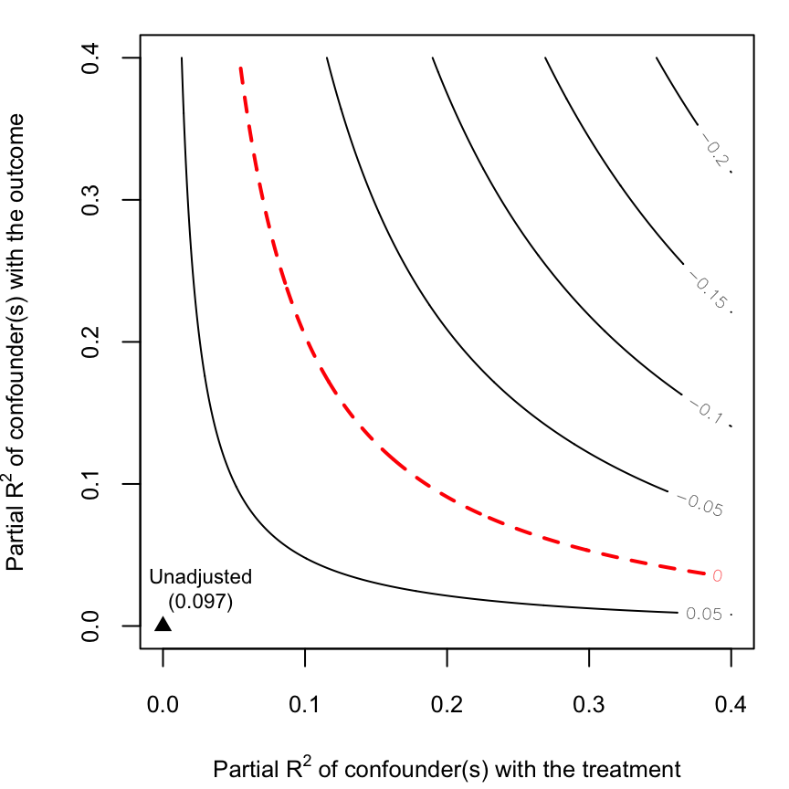

vignettes/sensitivity_you_see_in_print.Rmd
sensitivity_you_see_in_print.RmdIn this section we discuss how to use the individual functions of sensemakr to peform sensitivity analyses of results you see in print, but do not have access to the microdata. Here we take a more practical approach, and spend less time discussing the intepretation or theory. Therefore, if this is you first time using these tools, it may be helpful to read the vignette “An introduction to sensitivity analysis using sensemakr” firt, as well as the JRSS-B paper ( Cinelli and Hazlett (2020). )
Suppose that, instead of having access to the raw data of the conflicts in Darfur (see ?darfur), we onlt had instead, access to the usual regression table as presented in a published paper (here we show just the coefficients of directlyharmed and female, to save space):
===============================================
Dependent variable:
---------------------------
peacefactor
-----------------------------------------------
directlyharmed 0.097***
(0.023)
female -0.232***
(0.024)
-----------------------------------------------
Observations 1,276
R2 0.512
Adjusted R2 0.205
Residual Std. Error 0.310 (df = 783)
F Statistic 1.667*** (df = 492; 783)
===============================================
Note: *p<0.1; **p<0.05; ***p<0.01Further suppose that the paper claims that there is a large, positive causal effect of directlyharmed on peacefactor, but does not present any sensitivity analysis to examine the robustness of such claim against the threat of unobserved confounding. Can we assess how robust these findings are by using just the summary statistics of the regression table? Fortunately, the answer is “yes.” Here we show how to replicate all results o the previous vignette “An introduction to sensitivity analysis using sensemakr” using the “lower level” functions of sensemakr.
It is possible to compute the partial \(R^2\) and robustness value of directlyharmed by simply providing the t-statistics and the degrees of freedom of the regression. The partial \(R^2\) is computed using the partial_r2() function.
partial_r2(t_statistic = 0.097/0.023, dof = 783)
#> [1] 0.02221115The partial \(R^2\) here is 2.2%, which means that unobserved confounders that explain 100% of the residual variation of the outcome (peacefactor), would still need to explain 2.2% of the the treatment (directlyharmed) to bring the point estimate to zero.
The robustness value is computed with the robustness_value() function. By default, the function computes the minimum amount of confounding to bring the point estimate (alpha=1, ie, significance level of 1) to zero (q=1, that is, a reduction of 100% of the current estimate).
robustness_value(t_statistic = 0.097/0.023, dof = 783)
#> [1] 0.1397868
#> Parameters: q = 1, alpha = 1This means that confounders that explain 13.9% of the residual variance of both the treatment and the outcome are sufficiently strong to explain away the observed estimate of 0.097. Confounders with both associations lower than 13.9% are not sufficiently strong to do so.
These defaults can be changed. For example, the code below computes the minimum strength of confounding to bring the lower end of a 95% confidnce interval (alpha =0.05) to half of the current estimate q=1/2. We see that a confounder that explains just 0.05% of both the treatment and the outcome is sufficiently strong to make the confidence interval include the value of 0.0485 (half of the current estimate of 0.97).
robustness_value(t_statistic = 0.097/0.023, dof = 783, q = 1/2, alpha = 0.05)
#> [1] 0.005148514
#> Parameters: q = 0.5, alpha = 0.05It is also possible to compute all these sensitivity statistics with the convenience function sensitivity_stats()
sensitivity_stats(estimate = 0.097, se = 0.023, dof = 783)
#> treatment estimate se t_statistic r2yd.x rv_q rv_qa
#> 1 treatment 0.097 0.023 4.217391 0.02221115 0.1397868 0.07734391
#> f2yd.x dof
#> 1 0.0227157 783ovb_contour_plot(estimate = 0.097, se = 0.023, dof = 783)